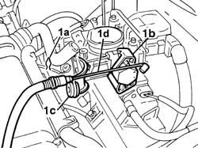
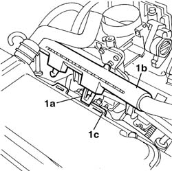
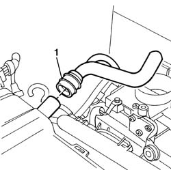
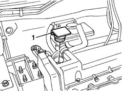
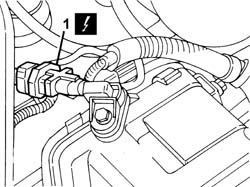
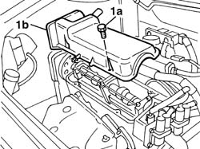
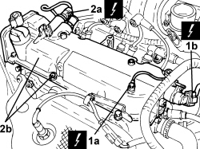
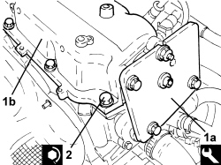
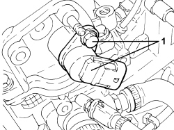

1016A20 single cam cover - r + r and replace gasket
- Path
- Procedures > 10 ENGINE > 1016 CYLINDER HEAD(S) > 1016A cam covers > 1016A20 single cam cover - r + r and replace gasket
- Kind
- repair procedure (removal / refitting; the operation number is the code)
- Applies to
- engines: 1.2 8v, 1.4 8v; all production periods
- Interactive page
- https://sloeber94.github.io/elrnDB-fDbl/en/#/2584165
Applies to: engines: 1.2 8v; all production periods
 Removing
Removing
 Refitting
RefittingOp. 1048A10 AIR FILTER ASSEMBLY - R.R.
1. Lift clip (1a), release the cable from the attachment (1b) on the throttle control device and bracket (1c), then place accelerator cable (1d) aside.

Applies to: engines: 1.2 8v; all production periods
1. Undo the fastening clip (1a) and release the injector plastic electrical cable protection (1b) from the slots (1c) on the cam cover.

Applies to: engines: 1.2 8v; all production periods
1. Disconnect the oil vapour recovery pipe from the cam cover and remove it.

Applies to: engines: 1.2 8v; all production periods
1. Remove the engine oil filler cap.

Applies to: engines: 1.2 8v; all production periods
1. Disconnect the electrical connection for the timing sensor.
Description | Connector | |
|---|---|---|
1 | Timing sensor |

Applies to: engines: 1.2 8v; all production periods
1. Undo the fixing bolts (1a) and remove the tappet cover (1b).
Recover the underlying gasket.

Applies to: engines: 1.2 8v; all production periods
Refitting
RemovingFit a new gasket on the cam cover.
Position the tappet cover and secure it using the fixing bolts.
Fastening | Component | dia | Value (daNm) | |
|---|---|---|---|---|
- | Bolt | CAM COVER | M6 | 1 |
Fit the oil filler plug.
Connect the electrical connection for the timing sensor.
Description | Connector | |
|---|---|---|
- | Timing sensor |
Press-fit the oil vapour recovery pipe on the cam cover.
Refit the injector electrical wiring cable duct pipe to the slots on the cam cover.
Position the control cable, securing the head to the throttle valve control device.
Position the clip on the accelerator control cable adjustment device.
Op. 1068A10 ACCELERATOR PEDAL CONTROL - CHECK, ADJUST IF NECESSARY AND LUBRICATE
Applies to: engines: 1.4 8v; all production periods
Removing
RefittingApplies to: engines: 1.4 8v; all production periods
Op. 1048A10 AIR FILTER ASSEMBLY - R.R.
Op. 1056B82 INJECTION/IGNITION SYSTEM E.C.U. (ONE) - R + R
Op. 1056B87 IGNITION/INJECTION SYSTEM CONTROL UNIT SUPPORT - R.R.
Op. 5510C14 IGNITION COIL/S - R+R
Op. 1032D26 TIMING SYSTEM FRONT PROTECTIVE COVER (UPPER PART) - R.R.
1. Unscrew the bolt and remove the earth cable (1a) and electrical connection of timing sensor (1b).
Description | Connector | |
|---|---|---|
1a | Earth on engine |
Description | Connector | |
|---|---|---|
1b | Timing sensor |
2. Disconnect the electrical connection of the variable valve timing solenoid (2a), unscrew the bolts and remove the cam cover (2b).
Description | Connector | |
|---|---|---|
2a | Variable valve timing actuator | See N076 PHASE TRANSFORMER ACTUATOR |

Applies to: engines: 1.4 8v; all production periods
- Unscrew the bolt and remove the timing sensor.
Applies to: engines: 1.4 8v; all production periods
Refitting
Removing- Fit the cam cover on the cylinder head.
1. Fit template 1a) on cam cover (1b).
Description | Code | Function | |
|---|---|---|---|
1a | Template | 2.000.004.300 | Tappet cover centering |
2. Tighten the cam cover bolts to the recommended torque.
Value daNm | Fastening | Component | dia | |
|---|---|---|---|---|
2 | 0.8 ÷ 1.0 | Bolt | Tappet cover | M6 |

Applies to: engines: 1.4 8v; all production periods
1. Remove the template and fit the timing sensor.

Applies to: engines: 1.4 8v; all production periods
- Connect the electrical connection for the variable valve timing solenoid.
- Connect the electrical connection for the timing sensor and earth lead.
Op. 1032D26 TIMING SYSTEM FRONT PROTECTIVE COVER (UPPER PART) - R.R.
Op. 5510C14 IGNITION COIL/S - R+R
Op. 1056B87 IGNITION/INJECTION SYSTEM CONTROL UNIT SUPPORT - R.R.
Topics linked from this page (9)
- 1032D26 TIMING SYSTEM FRONT PROTECTIVE COVER (UPPER PART) - R.R.
- 1048A10 air cleaner filtering element - replace
- 1056B82 injection/ignition system e.c.u. (one) - r + r
- 1056B87 ignition/injection system control unit mount - r r
- 1068A10 accelerator pedal control - check, adjust if necessary and lubricate
- 5510C14 ignition coil/s - r+r
- C040 ENGINE EARTH
- K047 TIMING SENSOR.
- K47 TIMING SENSOR ( ENGINE )
Topics that link to this page (16)
- 0510A30 cam lift - check with cam cover(s) removed
- 1016C10 cylinder head - r + r and replace gasket
- 1020D14 front crank shaft oil seal cover - r + r and replace seals for versions with oil pump on crank shaft, timing side
- 1032B10 toothed timing belt - r + r for timing adjustment or replacement
- 1032B14 toothed timing belt - r + r for timing adjustment or replacement versions with air conditioner
- 1032B60 bolt pulley - r r
- 1032B62 TIMING BELT TOOTHED PULLEY - R.R. FOR VERSIONS WITH AIR CONDITIONING
- 1036B10 overhead camshaft - r r on vehicle
- 1036B30 overhead camshaft front cover - r + r and replace seals with timing belt removed
- 1036B36 front crankshaft oil seal-r r with timing belt removed
- 1036C39 PHASE TRANSFORMER ON INLET CAMSHAFT IN CYLINDER HEAD - R.R.
- 1036H10 valve tappets - check and adjust clearance
- 1036H14 valve tappets - check clearance
- 1036H18 VALVE TAPPETS - Adjust. following clearance check
- 1084B50 timing mount oil pipe - r r
- 1088C10 water pump - r + r